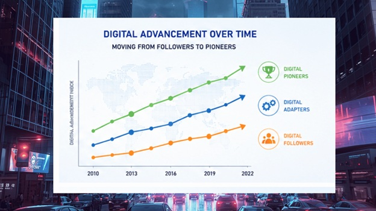
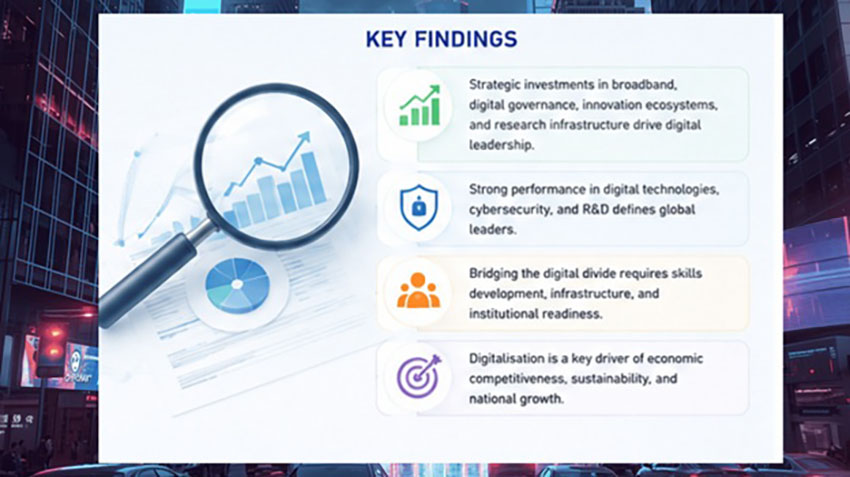

New research from SLIIT maps the world's digital landscape — and offers a practical roadmap for those trying to catch up
Somewhere between the headlines about AI, the scramble for broadband access, and the hype around smart cities, a more fundamental question often gets lost: how do we actually measure whether a country — or a company — is digitally ready? And what separates those who are genuinely leading the digital economy from those simply keeping pace?
A new study from the SLIIT Business School takes this question seriously. Led by Prof. Ruwan Jayathilaka and two undergraduate researchers, Ushan Kumara and Dilan Wijerathna, the paper "Digitalisation Dynamics: Developing a Global Index for Digital Pioneers, Adapters, and Followers" does something rare in academic research: it builds a tool that is useful.
Published in the top-ranking Journal of Open Innovation: Technology, Market, and Complexity, the research goes well beyond a theoretical framework. Using advanced statistical modelling — including principal component analysis — the team built a comprehensive digitalisation index covering 71 countries over twelve years, from 2010 to 2022.
The index draws on a wide basket of indicators: internet usage, mobile connectivity, broadband penetration, ICT exports, research and development investment, patent applications, digital infrastructure, cybersecurity systems, and innovation capacity. Together, these paint a far more textured picture of digital readiness than any single metric could.
Based on these indicators, countries were sorted into three tiers. Digital Pioneers are leading nations with mature digital infrastructure, strong R&D, and advanced innovation ecosystems — among them the United States, Singapore, South Korea, Hong Kong, and China. Digital Adapters are countries actively investing in transformation and moving up the readiness ladder, with some transitioning rapidly into pioneer territory. Digital Followers are nations at earlier stages of development, often constrained by infrastructure gaps, lower R&D investment, or limited innovation capacity.
One of the study's most striking findings is how quickly some countries have been able to climb the rankings. Nations like Ireland, Estonia, Finland, and China demonstrated that long-term digital policy planning can transform economic competitiveness within a generation. The common thread: sustained investment in broadband access, digital governance, innovation ecosystems, and research infrastructure. These are not accidental outcomes — they reflect deliberate national strategies where governments treated digital readiness as a core economic priority.

For Prof. Jayathilaka, the findings carry a message that many organisations still struggle to internalise. "Many organisations assume digitalisation simply means adopting new software or digital tools," he explains. "But real digital transformation involves changing organisational culture, improving innovation capacity, strengthening data security, investing in people, and creating systems that support long-term technological adaptation."
Two findings stand out as particularly actionable for Sri Lankan businesses. First, cybersecurity and digital trust are no longer optional extras — they are central to competitive operations. As cloud adoption, online transactions, and AI-driven services become standard, the ability to protect digital systems and customer data is increasingly an indicator of overall digital maturity.
Second, R&D investment matters more than many organisations acknowledge. Countries with stronger research ecosystems and higher rates of patent activity consistently performed better across the digitalisation index. The study found strong relationships between innovation investment and overall digital competitiveness — a signal that knowledge-building is infrastructure, not overhead.

For a developing economy with ambitions to grow its knowledge-based industries, the study's message is clear: digital competitiveness is built, not inherited. It requires alignment between universities, industries, and policymakers — not just technology investment.
The research does not offer easy answers. But it does offer something more valuable: a framework for asking the right questions — and measuring progress honestly against them.
Prof. Ruwan Jayathilaka is a researcher at the SLIIT Business School. This research was conducted with undergraduate researchers Ushan Kumara and Dilan Wijerathna and published in the Journal of Open Innovation: Technology, Market, and Complexity.